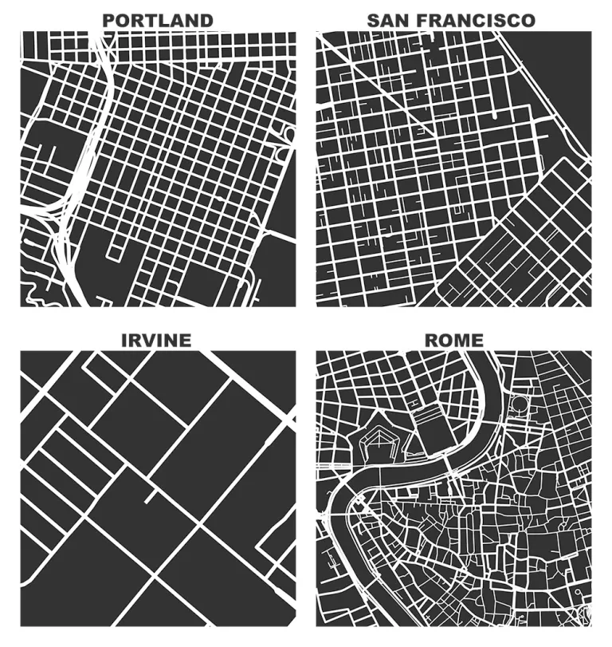
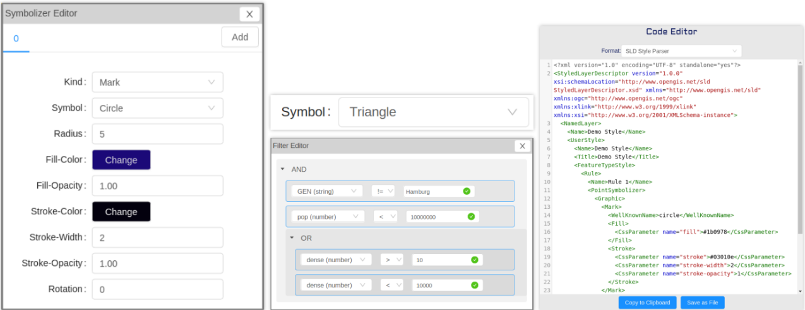
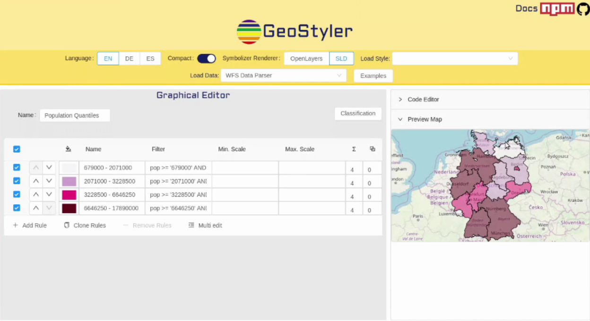
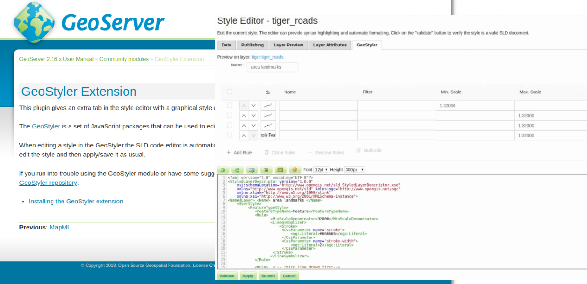
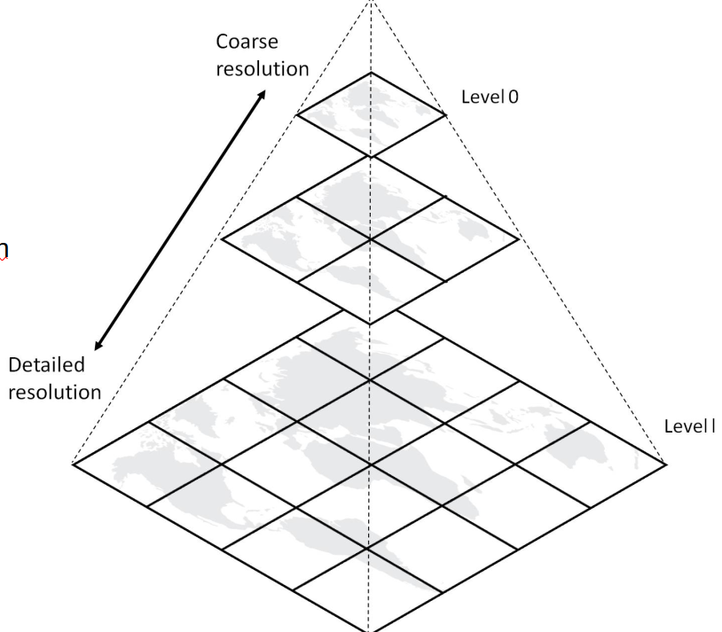
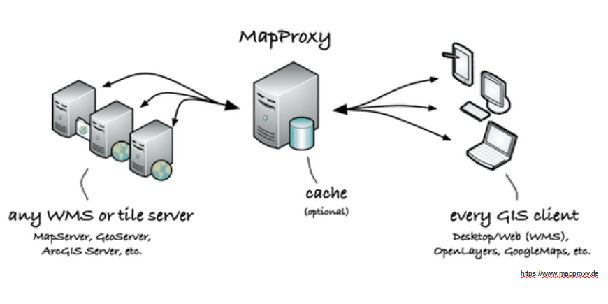
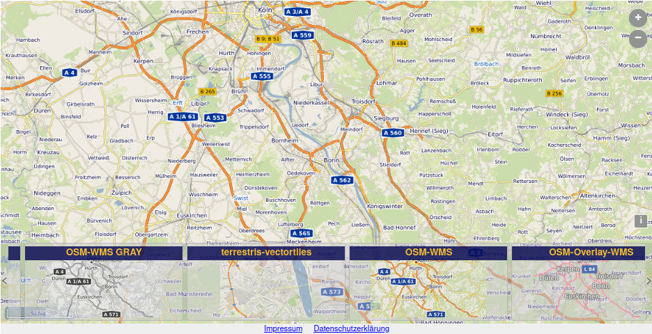
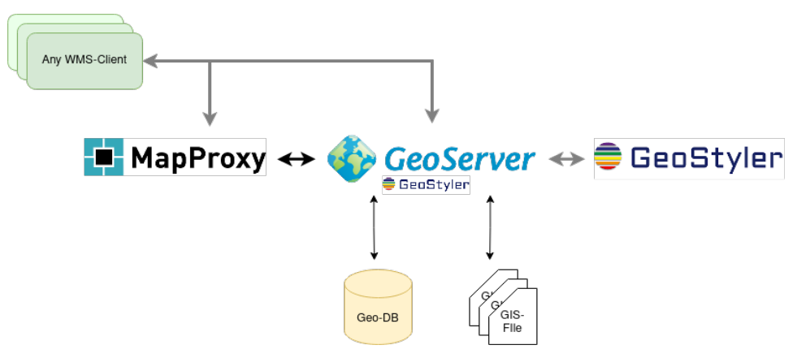

Optimized publishing of map and dataservices
with GeoServer, GeoStyler and MapProxy
Till Adams, Marc Jansen, terrestris GmbH & Co. KG
FOSS4G 2021, Buenos Aires 2021-09-30, 08:30–09:00, Buenos Aires
Agenda - Which road do we take?

- About ...
- ... the authors and presenters
- ... this talk
- Components
- Optimization
- Style
- Performance
- Summary & Example
About ... the authors and presenters
terrestris

- www.terrestris.de
- OpenSource GIS service provider, located in Bonn, Germany
- Planning, Development & Projects
- Consulting, Support & Trainees
- providing popular free OSM-WMS (worldwide)
... about this talk
Why this talk?
Why this talk?
This talk is for users, not so much for developers- Thank god: Creation of a simple WMS with Open Source tools is easy today, but ... 🙏
- Styling is still a Topic
- Performance is always a Topic
- Setting up and well designed and fast WMS services arestill a Topic
Is this the one and only solution?
No! Of course not!- There are many FOSS ways of achieving similar results
- This talk wants to share our experience and provide an insight into how we often solve problems
Scan the title for buzzw … components
Optimized publishing of map and dataservices withGeoServer
- Java-based, OGC compliant Server for Geodata
- Well documented and powerful API
- Widely used in GIS world
- Integrated in many WebGIS frameworks (e.g. SHOGun)
geoserver.org
geoserver
GeoServer
Input Files- Vector files (e.g. Shape)
- RasterData (e.g. GeoTIFF)
- DataBase (e.g. PostGIS)
- Other Servers (e.g. WMS, WFS)
GeoServer
Output Services- WebMapService (WMS)
- Styling: StyledLayerDescriptor (SLD)
- WebFeature Service (WFS)
- WebCoverageService (WCS)
- WebProcessingService (WPS)
Okay, you‘re done
GeoServer – Styling Maps
- WebMapService (WMS)
- Styling: StyledLayerDescriptor (SLD)
GeoStyler
- Ready-to-use map styling library
- Read & write of various style formats
- Read of various data formats
- Development & integration of own parsers
- Support for raster data
geostyler.org
geostyler
GeoStyler
Input Features- Filters & Classifications
- Scale Ranges
- Calculation of overlaps
- StandAlone (UI) / Integrated
GeoStyler
Output Styles- Styled Layer Descriptor (SLD)
- QGIS Style
- OpenLayers Style
- MapBox Style
- [...] Style
GeoStyler
User Interface Elements (UI)
GeoStyler
Standalone
GeoStyler
GeoServer Plug In
But now, you‘re done
Caching Maps
Clever if ...
- Data doesn‘t change too often
- Many requests expected
- Many layers (e.g. grouped layers
- Performance problems
- Restricted hardware capabilities of (WMS) Server
GeoWebCache
it's integrated in GeoServer- Java-based tiling server (caching application)
- Sources: WMS
- Interfaces: WMS-C, WMTS, TMS, Google Maps KML, Virtual Earth
- Well documented and powerful API
- Integrated in GeoServer
geowebcache.org
geowebache
MapProxy
Standalone- Proxy for geospatial data (Caching engine)
- Sources: WMS, WMTS, Mapserver, Mapnik, Tilecache GoogleMaps, BingMaps, ArcGIS REST
- Interfaces: WMS-C, TMS, WMTS, KML SuperOverlays
- Well documented and powerful API
mapproxy.org
mapproxy
MapProxy

MapProxy
cool functions of MapProxy- MapProxy is capable to
- Auto-generate grey version of cache
- Re-project tiles (= one cache for several EPSG‘s)
- Interpolate tiles between cached zoom levels
- Read a lot of input data
- Optimized storage
- Security for layers or regions
GeoWebCache - Mapproxy
the attempt of a comparison I- GeoWebCache is built-in GeoServer & Standalone
- GeoWebCache: one cache per EPSG-code – MapProxy: same cache for all, if wanted
GeoWebCache - Mapproxy
the attempt of a comparison II- MapProxy is able to replace the service behind by cache-interpolation
- MapProxy interpolates tiles if request is between zoom levels
- GeoWebCache sends request to GeoServer
- GeoWebCache WMS needs parameter “tiled=true“ on WMS-request
One example
Free to use world-wide OSM WMS: ows.terrestris.de
Architecture
Optimized publishing of map and dataservices
And now, you‘re done!
Summary
It's cool, it's open!- Open Source is combinable!
- There is often more than one component to reach your goal
- The presented architecture has already proven its suitability for setting up good-looking, fast and robust MapServices, as the example OpenStreetMap WMS shows